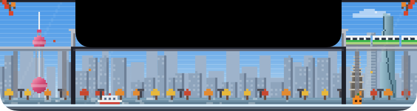
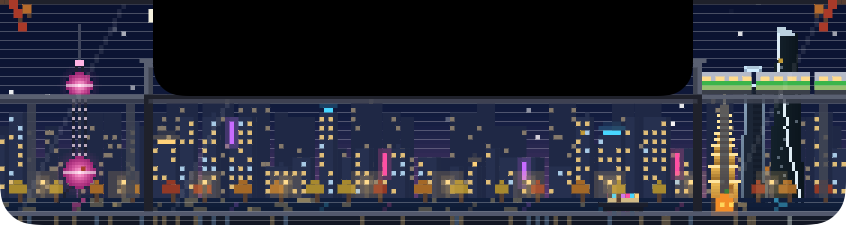
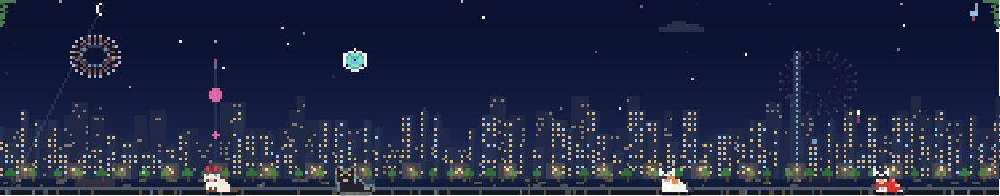
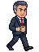

鼠标往屏幕顶上一推就开刷，还能一次搜遍四个平台。
四只猫替你把内容叼回来，数据只留在你的 Mac 上。
鼠标推到屏幕顶上，面板从刘海里落下来。小红书、抖音、B 站、快手轮流出现，看过的不会再来；点别处就收起。
一个关键词，四只猫分头出门，谁先回来谁先显示。结果按封面排成瀑布流，点开接着刷。
小岛里的天色、天气、季节跟着你所在的城市走。东方明珠、陆家嘴、天坛、大裤衩……入夜后一盏盏亮起来。


一键收起、视频暂停。试试看：老板走过来的时候，按下 ⌥ + Esc。


凌晨还亮着屏，猫会说一句「辛苦啦」。刷得太快时它们抱着纸箱慢慢搬，所有平台都要歇一会儿时，就趴下打个盹，到点自己回来——不会把你的账号刷到被平台限流。
catland 不上传任何东西，也不需要注册。
不会回写到原平台，所有平台的「喜欢」收在一起。
登录状态只存在你的 Mac 上，过期了再登一次就好。
catland 只读取内容，不会替你点赞、评论或关注；每个平台的请求都有上限和随机间隔，接近上限时猫会自己歇一会儿。
登录状态、点赞收藏都只存在你的 Mac 上（~/Library/Application Support/catland），没有任何 catland 服务器。
安装包暂时只支持 Apple 芯片；Intel 机器可以按 README 从源码构建。
退出 catland，删掉 App，再删除 ~/Library/Application Support/catland 文件夹即可。